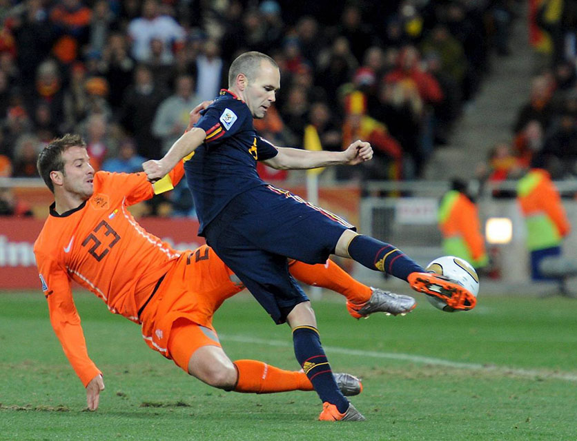

19.ª edición
Primer Mundial en África
Copa Mundial de la FIFA Sudáfrica 2010
11 de junio – 11 de julio de 2010
País sede: Sudáfrica 🇿🇦
32 selecciones
64 partidos
Datos generales del torneo
- País sede: Sudáfrica 🇿🇦
- Ciudades sede: Johannesburgo, Ciudad del Cabo, Durban, Pretoria, Port Elizabeth, Bloemfontein, Polokwane, Nelspruit, Rustenburg
- Estadios: 10 recintos (incluyendo Soccer City y Green Point Stadium)
- Selecciones participantes: 32
- Partidos jugados: 64
- Goles anotados: 145
- Campeón: España 🇪🇸
- Subcampeón: Países Bajos 🇳🇱
- Tercer lugar: Alemania 🇩🇪
- Cuarto lugar: Uruguay 🇺🇾
- Máximo goleador (Bota de Oro): Diego Forlán, Thomas Müller, Wesley Sneijder y David Villa (5 goles)
- Mejor jugador (Balón de Oro): Diego Forlán
- Mejor portero (Guante de Oro): Iker Casillas
- Mejor jugador joven: Thomas Müller
- Premio Fair Play: España 🇪🇸
Jugadas y momentos destacados
Desde el icónico “Waka Waka”, pasando por el gol monumental de Tshabalala, hasta la gloria de España en la final.

Resumen del torneo
- El torneo comenzó con el histórico gol de Siphiwe Tshabalala para Sudáfrica ante México.
- España inició con derrota ante Suiza, pero luego mostró uno de los estilos más dominantes en la historia del fútbol.
- La final en Soccer City terminó 1–0 con un gol de Andrés Iniesta en el minuto 116.
- Países Bajos llegó invicto a la final, pero no pudo coronarse ante el juego español.
- Uruguay sorprendió llegando a semifinales gracias a Diego Forlán y Luis Suárez.
Fase final (últimos 4)
Semifinales
- 🇳🇱 Países Bajos 3–2 Uruguay 🇺🇾
- 🇪🇸 España 1–0 Alemania 🇩🇪
Tercer lugar
- 🇩🇪 Alemania 3–2 Uruguay 🇺🇾
Final
- 🇪🇸 España 1–0 🇳🇱 Países Bajos
(Iniesta 116')
Selecciones participantes por grupo
Grupo A
- 🇿🇦 Sudáfrica
- 🇲🇽 México
- 🇺🇾 Uruguay
- 🇫🇷 Francia
Grupo B
- 🇦🇷 Argentina
- 🇳🇬 Nigeria
- 🇰🇷 Corea del Sur
- 🇬🇷 Grecia
Grupo C
- 🇺🇸 Estados Unidos
- 🏴 Inglaterra
- 🇩🇿 Argelia
- 🇸🇮 Eslovenia
Grupo D
- 🇩🇪 Alemania
- 🇦🇺 Australia
- 🇷🇸 Serbia
- 🇬🇭 Ghana
Grupo E
- 🇳🇱 Países Bajos
- 🇯🇵 Japón
- 🇩🇰 Dinamarca
- 🇨🇲 Camerún
Grupo F
- 🇮🇹 Italia
- 🇵🇾 Paraguay
- 🇸🇰 Eslovaquia
- 🇳🇿 Nueva Zelanda
Grupo G
- 🇧🇷 Brasil
- 🇰🇵 Corea del Norte
- 🇨🇮 Costa de Marfil
- 🇵🇹 Portugal
Grupo H
- 🇪🇸 España
- 🇨🇭 Suiza
- 🇭🇳 Honduras
- 🇨🇱 Chile
Final: España vs Países Bajos
La final, disputada en Johannesburg, terminó con la histórica victoria de España.
Tras una final intensa y física, Andrés Iniesta marcó el 1–0 definitivo para coronar
a España como campeona del mundo por primera vez.
España 🇪🇸 – Alineación titular
- DT: Vicente del Bosque
- Iker Casillas (C)
- Sergio Ramos
- Carles Puyol
- Gerard Piqué
- Joan Capdevila
- Sergio Busquets
- Xabi Alonso
- Andrés Iniesta
- Xavi Hernández
- David Villa
- Pedro Rodríguez
Países Bajos 🇳🇱 – Alineación titular
- DT: Bert van Marwijk
- Maarten Stekelenburg
- Gregory van der Wiel
- Ron Vlaar
- John Heitinga
- Giovanni van Bronckhorst (C)
- Mark van Bommel
- Nigel de Jong
- Wesley Sneijder
- Arjen Robben
- Dirk Kuyt
- Robin van Persie
Reseña general
Sudáfrica 2010 fue uno de los Mundiales más simbólicos de la historia,
marcando un antes y un después al ser el primero celebrado en territorio africano.
Fue un torneo lleno de sorpresas, pasión y cultura, recordado por las vuvuzelas,
los bailes, la música y un ambiente inolvidable. España se consolidó como la mejor
selección del mundo tras dominar el fútbol con su estilo de toque.